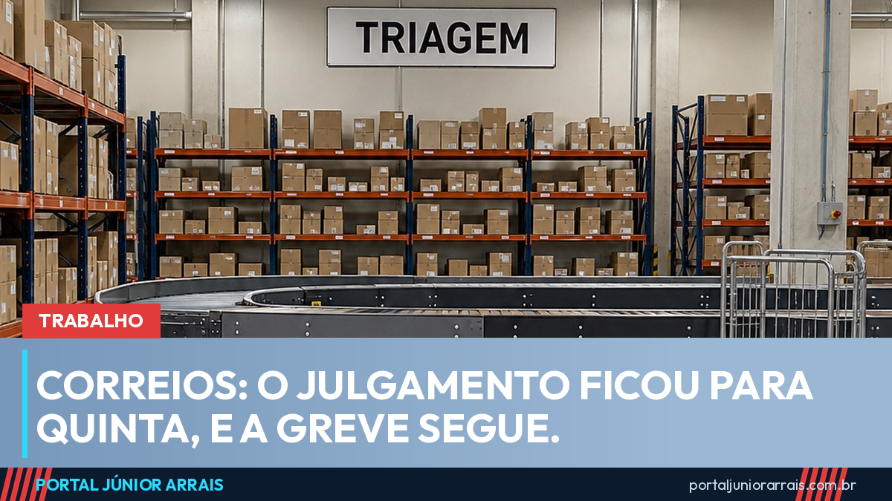

Correios: TST adiou o julgamento do dissídio para quinta e a greve segue

O julgamento que iria decidir o rumo da greve dos Correios não aconteceu. O Tribunal Superior do Trabalho suspendeu a sessão de segunda-feira, 21 de setembro, e remarcou o dissídio coletivo para quinta-feira, 24, às 15h30. Até lá, a paralisação continua.
O motivo foi processual. A empresa juntou documentos novos — vídeos e relatos sobre bloqueios durante a greve — na sexta-feira à noite e no sábado, sem que os sindicatos tivessem tempo de se manifestar. O presidente do TST, ministro Vieira de Mello Filho, entendeu que julgar naquelas condições feriria o contraditório e disse que seguir adiante seria "absolutamente temerário".
O portal havia informado, na semana passada, que o dissídio seria julgado na segunda-feira. A nova data não muda o que já está valendo enquanto o processo corre.
O que já está decidido
Antes do adiamento, o TST já havia determinado a manutenção de ao menos 80% do efetivo em atividade durante a greve, por considerar o serviço postal essencial e por causa do período eleitoral, em que a entrega de correspondência oficial pesa.
Na mesa de negociação seguem quatro pontos em disputa: o plano de saúde, que é o principal deles; o reajuste salarial para recompor a inflação; o tratamento dos dias parados; e reivindicações dos sindicatos como vale-cultura e adicional de complexidade.
O que muda para quem espera encomenda
A greve começou em 10 de setembro, por tempo indeterminado, e já passa de dez dias. Com 80% do efetivo trabalhando, a entrega não parou, mas anda mais devagar, sobretudo em capitais e em centros de triagem maiores. Encomendas com prazo contratado, cartas registradas e documentos de concurso e de benefício são os casos em que vale acompanhar o rastreamento com mais atenção.
Quem depende de correspondência oficial — carta de convocação do INSS, aviso de perícia, notificação de processo — precisa redobrar o cuidado com prazo. Documento que não chega a tempo não suspende sozinho o prazo que corre contra você.
Cuidado com golpe
Atraso de entrega é o terreno favorito de um golpe antigo que volta com força a cada greve: a mensagem de "encomenda retida" ou "taxa de reentrega". Ela chega por SMS ou WhatsApp, com um link parecido com o do rastreamento verdadeiro, e pede um valor pequeno — quase sempre por Pix — para liberar o pacote. Em outra versão, o link pede dados do cartão para "pagar o imposto".
Encomenda parada por greve não tem taxa de liberação, e serviço público não cobra Pix por mensagem para entregar pacote. Se você recebeu uma cobrança assim, se perdeu um prazo por causa de correspondência que não chegou ou se foi demitido durante a paralisação, procure um profissional de sua confiança para avaliar a situação antes de pagar ou assinar qualquer coisa.
Júnior Arrais · Editor do Portal Júnior Arrais
Comunicador de Ubá (MG). Escreve todos os dias sobre benefícios sociais, INSS, trabalho e economia do dia a dia, a partir do Diário Oficial, de portarias e de fontes oficiais, em linguagem simples. Conheça a linha editorial e a política de correções do portal.